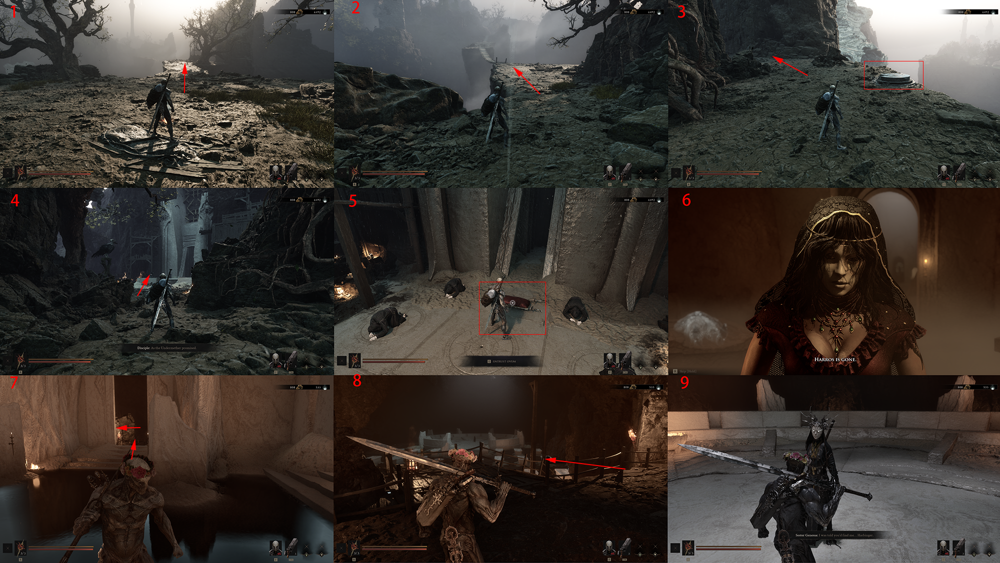

Main story · route draft
Marrow Keep
Route
The annotated route into Marrow Keep and its first hub interactions. Follow each red number and arrow in sequence.
Original gameplay draft · route text in progress- Start
- Approach to Marrow Keep
- Focus
- Reach the hub and key interaction
- Next area
- Widow’s Overlook
Reach the keep
- Follow the raised cliff path marked in panels 1–3.
- Use the entry route in panel 4 to reach the interior approach.
- Panel 5 marks the required hub interaction.
- Continue through the interior path shown in panels 7–9 after the transition.
